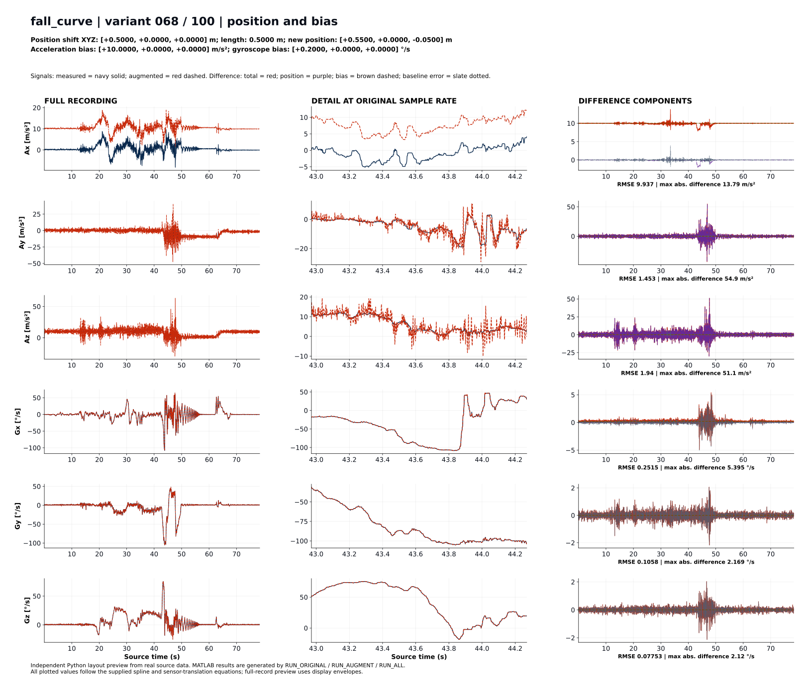

Readable report preview
Layout preview, not a native MATLAB result. This example uses the real fall_curve recording and an independent Python reproduction of the original conditioning and sensor-position equations.
Shift: +0.5 m along X. Acceleration bias: +10 m/s² on Ax. Gyroscope bias: +0.2 deg/s on Gx.
The exact report theme and chart-size controls below are extracted from this project's MATLAB HTML helpers.
One original recording and one augmented variant

Default: large labels and horizontal scrolling. SVG stays sharp when zoomed. Use Fit width only when you want a smaller overview.

Full-record changes by axis
Total difference = position effect + bias effect + baseline reconstruction error.
| Axis | Unit | RMSE vs original | Maximum difference | Peak time (s) | Position RMS | Bias offset | Baseline RMS |
|---|---|---|---|---|---|---|---|
| Ax | m/s² | 9.93747 | 13.792 | 33.480 | 0.230771 | +10 | 0.0810397 |
| Ay | m/s² | 1.45308 | 54.8952 | 46.922 | 1.45258 | +0 | 0.0482267 |
| Az | m/s² | 1.93988 | 51.0967 | 47.696 | 1.92613 | +0 | 0.160223 |
| Gx | °/s | 0.251526 | 5.39541 | 48.300 | 0 | +0.2 | 0.152531 |
| Gy | °/s | 0.10577 | 2.16862 | 47.697 | 0 | +0 | 0.10577 |
| Gz | °/s | 0.0775258 | 2.1196 | 46.816 | 0 | +0 | 0.0775258 |